STAT:5400 Section 3.1 — Random Number Generators
Every code block on this page runs in your browser. Click Run Code, change the code, run it again. Where the same idea exists in both languages, the R tab comes first. The R session on this page loads mvtnorm, so the first block you run takes a few extra seconds.
1 Principles of Simulation Studies
1.1 Reading
Art B. Owen. Monte Carlo theory, methods and examples.
1.2 Computer simulation
- Computer simulations are experiments performed on the computer using computer-generated random numbers.
- Simulation is used to
- study the behavior of complex systems such as biological systems, ecosystems, engineering systems, and computer networks, among many others;
- compute values of otherwise intractable quantities such as integrals;
- maximize or minimize the value of complicated functions;
- study the behavior of statistical procedures;
- implement novel methods of statistical inference.
Source: https://homepage.divms.uiowa.edu/~luke/classes/STAT7400/modules/mod_sim.pdf
1.3 Simulations in statistics
- Goal: Simulation studies are commonly done to evaluate the performance of a frequentist statistical procedure, or to compare the performance of two or more different procedures for the same problem.
- Simulation studies enable us to see what happens “when many many samples of the same size are drawn from the same population.”
- Why we need them: properties of statistical methods must be established before the methods can safely be used in practice, but exact analytical derivations are rarely possible.
- Large sample approximations are often available. Whether they are relevant at the (finite) sample sizes met in practice still has to be checked.
- Analytical results may require assumptions such as normality. What happens when these assumptions are violated? Analytical results, even large sample ones, may not be possible.
- Properties of estimators that are often evaluated by simulations:
- bias; mean squared error; coverage of confidence intervals.
- Properties of hypothesis tests also can be evaluated by simulation studies:
- size; power.
- Simulation studies are experiments, and the things you know about experimental design and sample size calculation apply.
1.4 What happens when an assumption fails
The one-sample \(t\)-test is derived under normality. Below is how often a test set at the 5% level actually rejects a true null hypothesis when the data are exponential instead.
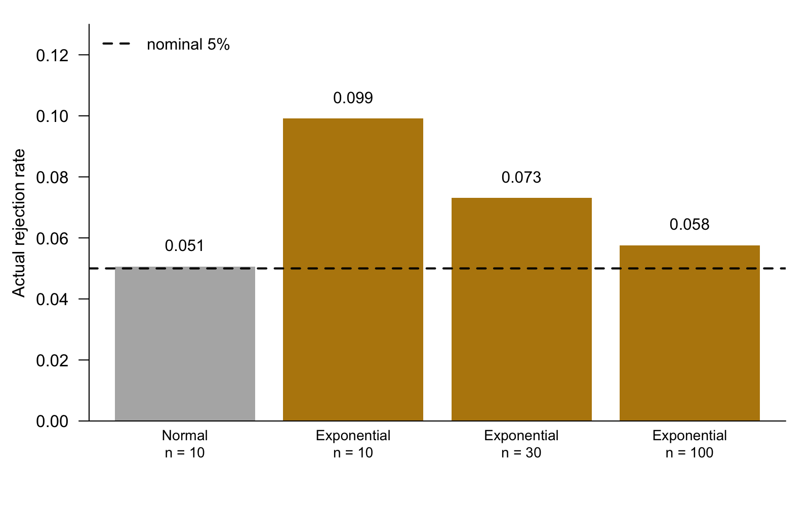
- With normal data the test does what it promises.
- With exponential data at \(n = 10\) it rejects twice as often as it should.
- The error shrinks as \(n\) grows, but it is still there at \(n = 100\).
- These numbers came from a simulation. You will learn how to produce them in this section.
1.5 Components in simulations
Simulations need
- uniform random numbers;
- non-uniform random numbers;
- random vectors, stochastic processes, etc;
- techniques to design good simulations;
- methods to analyze simulation results.
2 Uniform Random Numbers
2.1 Draw from the uniform distribution
To generate \(U \sim \mathrm{Unif}(0, 1)\), we call
- Note that \(U\) is a random variable which follows a uniform distribution on \((0, 1)\).
- In the example above, \(u\) is a realization of the random variable \(U\).
- The realized value is obtained after the experiment was conducted.
2.2 Set seed
We need to set the seed to make our number generation reproducible. This is done with the set.seed function.
Run the block twice. The value does not change, because set.seed puts the generator back to the same starting state.
NoteGoing further: what a seed actually is
R’s numbers are not random. They are a long, fixed sequence that looks random, and the seed says where in that sequence to start.
R’s default generator is the Mersenne-Twister. Its state is 625 integers, kept in .Random.seed. set.seed(5400) fills that state from the number 5400, so every later draw is determined. The sequence repeats only after \(2^{19937}-1\) numbers, which is why it looks random for any practical purpose.
set.seed(5400)
length(.Random.seed)
head(.Random.seed)This is why a paper that reports a simulation must report its seed. Without the seed, the table cannot be reproduced.
2.3 Generate \(U \sim \mathrm{Unif}(1, 5)\)
Recall that \(U_1 \sim \mathrm{Unif}(0, 1)\) and \(U_2 = 1 + 4U_1\) give \(U_2 \sim \mathrm{Unif}(1, 5)\).
Predict — two ways to reach the same distribution. Will they give the same number?
NoteWhy the two lines agree
They agree exactly. runif(1, 1, 5) draws one number on \((0,1)\) and then applies \(1 + 4u\) internally.
This will not always happen. If a function uses a different number of uniform draws, or a different algorithm, the results differ. See rexp later on this page.
2.4 A table of random number generators
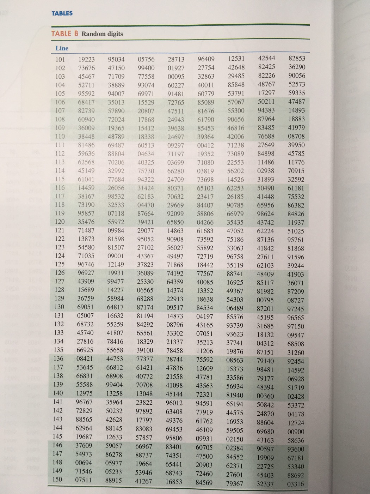
Source: The Practice of Statistics for Business and Economics, 3rd ed.
Before computers, you looked numbers up in a printed table like this one. Starting at the same row gave the same numbers again, which is what set.seed does today.
2.5 Generating many uniforms
How about generating \(U_1, \ldots, U_{100} \stackrel{iid}{\sim}\mathrm{Unif}(1, 5)\)?
The following code yields exactly the same results, but usually much slower.
2.7 Mean and variance of uniform distribution
Given \(U \sim \mathrm{Unif}(0, a)\), it is known that \(\mathrm{E}(U) = a/2\) and \(\mathrm{Var}(U) = a^2/12\). What are the sample estimates of those two population parameters?
Edit — what happens if the sample size increases? Change 100 to 10000 and run again.
NoteGoing further: two different variances
R’s var divides by \(n-1\); NumPy’s np.var divides by \(n\).
R returns the unbiased sample variance \(S^2\). NumPy returns the plug-in estimate, which is biased low by a factor \((n-1)/n\). With \(n = 100\) the two differ by 1%.
To make NumPy match R, pass ddof=1:
np.var(ulist, ddof=1)We meet this same \(n\) versus \(n-1\) choice again in Section 4.1, where the plug-in estimate is the natural one.
2.8 Estimate the mean and variance
Let \(X_1, \ldots, X_n\) be a random sample from a distribution with mean \(\mu\) and variance \(\sigma^2\). Let
\[ \bar{X} = \frac{1}{n} \sum_{i=1}^n X_i, \qquad S^2 = \frac{1}{n-1}\sum_{i=1}^n (X_i - \bar{X})^2. \]
The statistics \(\bar{X}\) and \(S^2\) are unbiased and consistent estimators of the parameters \(\mu\) and \(\sigma^2\), respectively:
\[ \mathrm{E}\bar{X} = \mu, \quad \mathrm{E}S^2 = \sigma^2, \qquad \bar{X} \stackrel{P}{\rightarrow} \mu, \quad S^2 \stackrel{P}{\rightarrow} \sigma^2. \]
2.9 Did we really generate from \(F_X\)?
- We have generated \(U\) from the uniform distribution.
- Let us think about it broadly: say we claim we have generated \(X\) from a distribution with CDF \(F_X\).
- Question: How can we verify that \(X\) is truly from the distribution with CDF \(F_X\)?
To deal with this question, let us first present an important fact: \(Y \sim \mathrm{Unif}(0, 1)\) if \(Y = F(X)\).
For simplicity, assume \(F\) is continuous and strictly increasing (this can be dropped).
\[ P(Y \le y) = P(F(X) \le y) = P(X \le F^{-1}(y)) = F(F^{-1}(y)) = y. \]
2.10 The probability integral transform, seen
Both histograms are flat: \(F(X)\) is uniform for both distributions.
2.11 Uniform random number generators in Python
Two generators have different arguments: low–high versus loc–scale.
scale is the width, not the upper end. To get \(\mathrm{Unif}(2, 5)\) you write scale=3, because \(5 - 2 = 3\). Passing scale=5 silently gives you \(\mathrm{Unif}(2, 7)\).
2.12 Q-Q plot (quantile-quantile plot)
- Check whether the sample conforms to a specific distribution.
- CDF: \(P(X \le a) = F_X(a)\).
- A number \(a\) is called a \(p\)th quantile of \(F_X\) if \(F_X(a) = p\).
- Suppose a sample \(X_1, \ldots, X_n\) follows \(F_X\) and sort the data into ascending order \(X_{(1)}, \ldots, X_{(n)}\).
- If the sample is large, we would expect
\[ F_X(X_{(i)}) \approx \frac{i-0.5}{n}. \]
To be consistent with R, we use something equivalent:
\[ X_{(i)} \approx F^{-1}_X \left(\frac{i-0.5}{n} \right). \]
- Plot of \(X_{(i)}\) against \(F^{-1}_X \left(\frac{i-0.5}{n} \right)\) should be an approximately straight line with slope 1 and intercept 0.
- We make this plot. If it seems linear, that supports the model that the data follow a distribution with CDF \(F_X\).
Ask AI:I am a statistics graduate student. A Q-Q plot of my sample against a theoretical distribution is straight in the middle but bends up at the right end. List the usual causes, say what each one means about the data, and describe what the plot would look like for heavy tails, light tails, and right skew. Keep it to one short paragraph per case.
3 Bernoulli and Binomial Distributions
3.1 Drawing from Bernoulli distribution
- How to generate \(Y \sim \mathrm{Bern}(p)\), whose PMF is \(P(Y = 1) = p\) and \(P(Y = 0) = 1-p\), with \(0 < p < 1\)?
- Generate \(U \sim \mathrm{Unif}(0, 1)\). Let \(Y = I(U < p)\), thus \(Y \sim \mathrm{Bern}(p)\).
- Algorithm:
- Generate \(U \sim \mathrm{Unif}(0, 1)\).
- Compare \(U\) and \(p\). Let \(Y = 1\) if \(U < p\) and \(Y = 0\) otherwise.
3.2 Drawing from Binomial distribution
- How to generate \(X \sim \mathrm{Bin}(n, p)\)?
- Generate \(Y_1, \ldots, Y_n \sim \mathrm{Bern}(p)\). Let \(X = \sum_{i=1}^n Y_i\).
In R,
In Python,
4 Inverse CDF Method
4.1 Inverse CDF method
- Suppose \(F_X\) is a cumulative distribution function. Goal: generate \(X\sim F_X\).
- Suppose that \(F_X\) is continuous and increasing. Let \(F^{-1}\) be its inverse function. If \(U \sim \mathrm{Unif}(0, 1)\), then \(X = F_X^{-1}(U)\) has CDF \(F\).
- Proof:
\[ \begin{aligned} P(F_X^{-1}(U) \le t) &= P(F_X(F_X^{-1}(U)) \le F_X(t)) \\ &= P(U \le F_X(t)) \\ &= F_X(t), \end{aligned} \]
which says the random variable \(X = F^{-1}(U)\) has CDF \(F\).
- In fact, the assumption that \(F_X\) is continuous and increasing can be dropped. The inverse CDF method is always valid based on the fact that \(F_X\) is right continuous.
4.2 Drawing from exponential distribution
- The CDF for the unit exponential distribution \(\exp(1)\) is \(F(t) = 1 - \exp(-t)\), \(t \ge 0\).
- The inverse function is \(F^{-1}(u) = -\log(1 - u)\).
- Given \(U \sim \mathrm{Unif}(0, 1)\), \(X = -\log(1-U)\) has an exponential distribution.
- Since \(1 - U \sim \mathrm{Unif}(0, 1)\), \(-\log(U)\) also has a unit exponential distribution.
- How to generate \(\exp(\lambda)\) where \(\lambda\) is the mean?
The mean is near 2 and the variance near 4, which is what \(\exp\) with mean 2 should give.
4.3 Histogram against the density
By hand — fill in the density call so the curve matches the histogram. Done when the curve sits on top of the bars. No AI for this block.
NoteSolution
The rate is the reciprocal of the mean. Xlist has mean 2, so the rate is \(1/2\):
plot(xs, dexp(xs, rate = 1/2), type = "l", ylim = c(0, 1),
xlab = "X", main = "exp(2)", ylab = "f(x)")R’s dexp, rexp, pexp and qexp are all parameterized by rate, not mean. Python’s np.random.exponential is parameterized by scale, which is the mean. This is a common mistake when translating between the two languages.
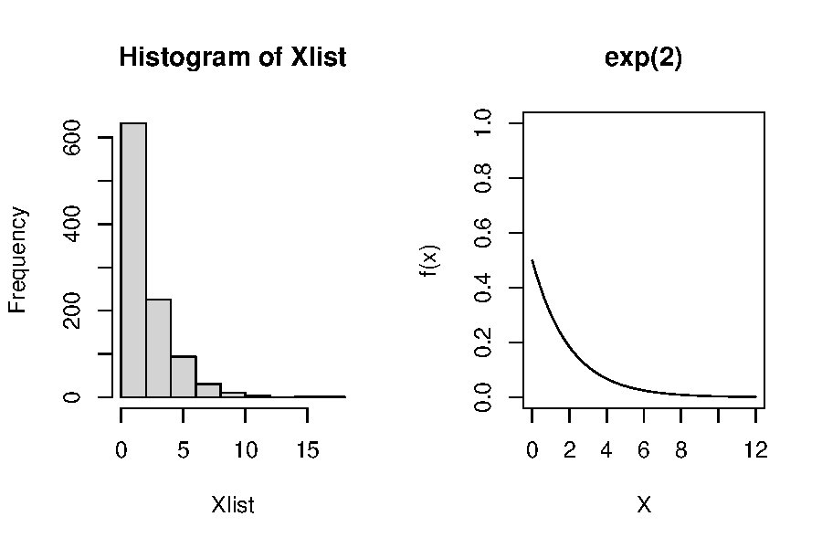
4.4 Q-Q plot for the exponential
By hand — fill in the two arguments of plot so the points fall on the line. Done when the cloud follows the 45-degree line. No AI for this block.
NoteSolution
plot(qexp(probs, rate = 0.5), sort(Xlist),
xlab = "Theoretical Quantiles", ylab = "Sample Quantiles",
main = "Q-Q plot for exponential distribution")
abline(0, 1)The theoretical quantiles go on the x-axis and the sorted sample on the y-axis. Forgetting sort is the usual mistake, and it produces a shapeless cloud rather than a line.
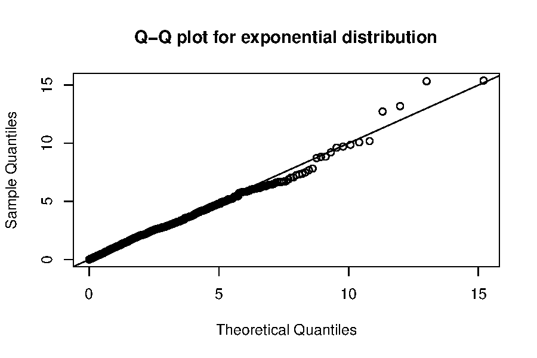
4.5 The rexp function in R
R does not implement rexp based on the inverse CDF method. The algorithm was developed in Marsaglia (1961), Generating exponential random variables, Annals of Mathematical Statistics, 899–902.
Source code: https://github.com/wch/r-source/blob/trunk/src/nmath/sexp.c
Predict — the same seed, the same distribution, two algorithms. Do the first three numbers match the inverse-CDF ones above?
NoteWhy they differ
They do not match. Both are correct draws from the same distribution, but they consume the uniform stream differently.
The inverse-CDF version uses exactly one uniform per exponential. Marsaglia’s algorithm uses a variable number, sometimes one and sometimes several. So after the first value the two streams are at different places in the same sequence.
The seed fixes the sequence of uniforms. It does not fix the result if the algorithm, or the order of the draws, changes.
4.6 Drawing from the standard Cauchy distribution
- The standard Cauchy distribution is equivalent to the \(t\)-distribution with one degree of freedom. Its CDF is
\[ F(x) = \frac{1}{2} + \frac{1}{\pi} \arctan(x). \]
- The inverse CDF is \(F^{-1}(u) = \tan(\pi(u - 1/2))\). Thus \(X = \tan(\pi(U - 0.5))\) has a standard Cauchy distribution.
- Try the
rcauchyfunction in R.
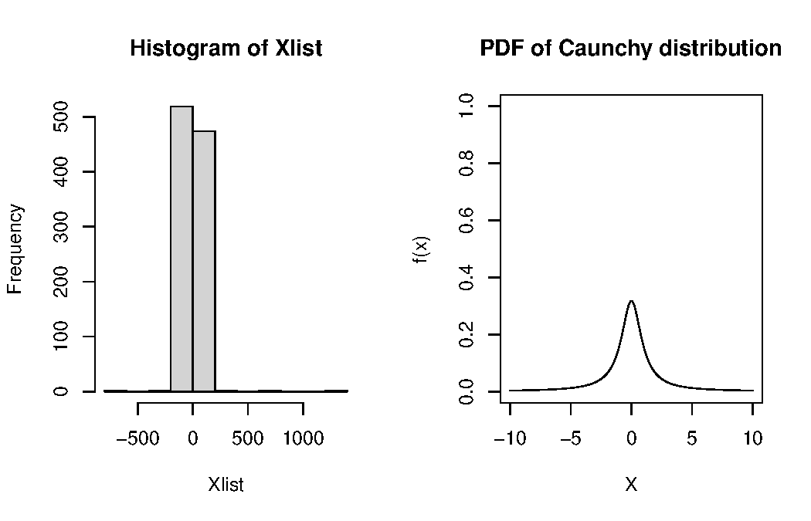
By hand — fill in the Q-Q plot for the Cauchy sample. Done when the middle of the cloud is straight. No AI for this block.
NoteSolution
plot(tan(pi * (probs - 0.5)), sort(Xlist),
xlab = "Theoretical Quantiles", ylab = "Sample Quantiles",
main = "Q-Q plot for Cauchy distribution")
abline(0, 1)You may also write qcauchy(probs) in place of tan(pi * (probs - 0.5)). They are the same function.
The extreme points are very far from the line. The Cauchy has heavy tails, so a few points are very far out.
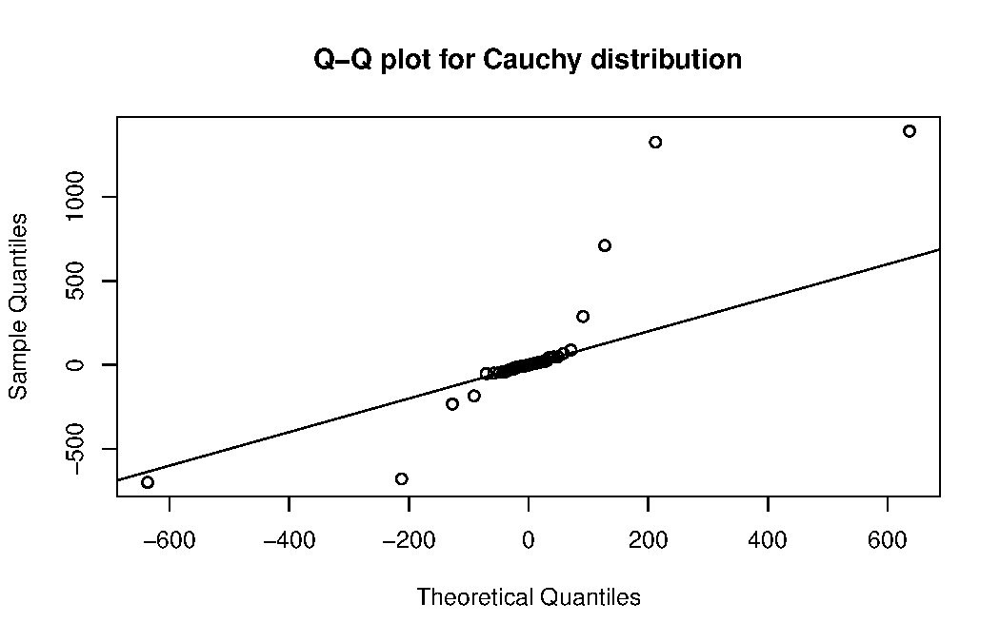
4.7 Cauchy and \(t\)
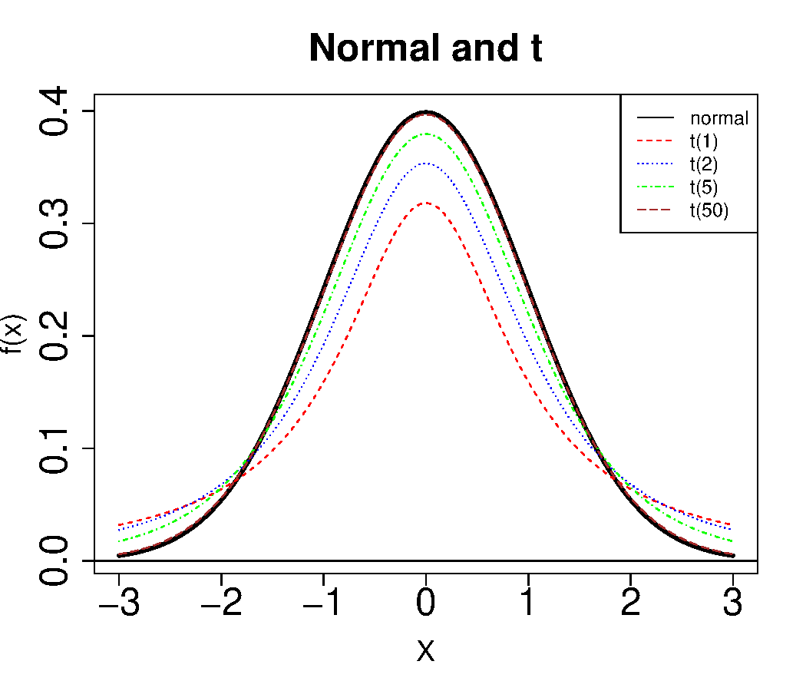
- The Cauchy distribution is a special case of the \(t\)-distribution with 1 degree of freedom.
- The Cauchy distribution is widely used to exemplify heavy-tailed data in simulations.
The three means are far apart, although each uses 10,000 draws. The sample mean does not settle down, because the Cauchy has no mean.
4.8 Sampling the next word
A language model draws its next word from a discrete distribution. Take the sentence
The p-value is 0.03, so at the 5% level we ___ the null hypothesis.
Suppose the model gives the probabilities below. We draw one word with the inverse CDF method, now for a discrete distribution: find where one uniform falls in the cumulative sums.
- The model does not always return the most likely word. This is why the same question asked twice can give two different answers.
- Temperature and top-p change the vector
pbefore the draw. See Section 2.4, Sampling controls.
5 Accept-Reject Sampling
5.1 Accept/reject sampling
- How to generate \((V_1, V_2)\) that is uniformly distributed in a unit square, i.e., \(-1 \le V_1, V_2 \le 1\)?
- Independently generate \(V_1, V_2 \sim \mathrm{Unif}(-1 ,1)\), with
runif(2, -1, 1). - How to generate \((V_1, V_2)\) that is uniformly distributed in a unit disk, i.e., \(V_1^2 + V_2^2 \le 1\)?
- Algorithm:
- repeat
- independently generate \(V_1, V_2 \sim \mathrm{Unif}(-1 ,1)\)
- until \(V_1^2 + V_2^2 \le 1\)
- return \((V_1, V_2)\)
- repeat
5.2 Accept/reject sampling (cont’d)
- This independently generates pairs \((V_1, V_2)\) uniformly on the square \((-1, 1) \times (-1, 1)\) until the result is inside the unit disk.
- The resulting pair is uniformly distributed on the unit disk.
- Probability of acceptance is
\[ \frac{\text{area of disk}}{\text{area of square}} = \frac{\pi}{4}. \]
- This approach is the accept-reject sampling method. More details and applications will be discussed in STAT 7400. https://homepage.divms.uiowa.edu/~luke/classes/STAT7400/notes.pdf
- What is the distribution of \(V_1/V_2\)?
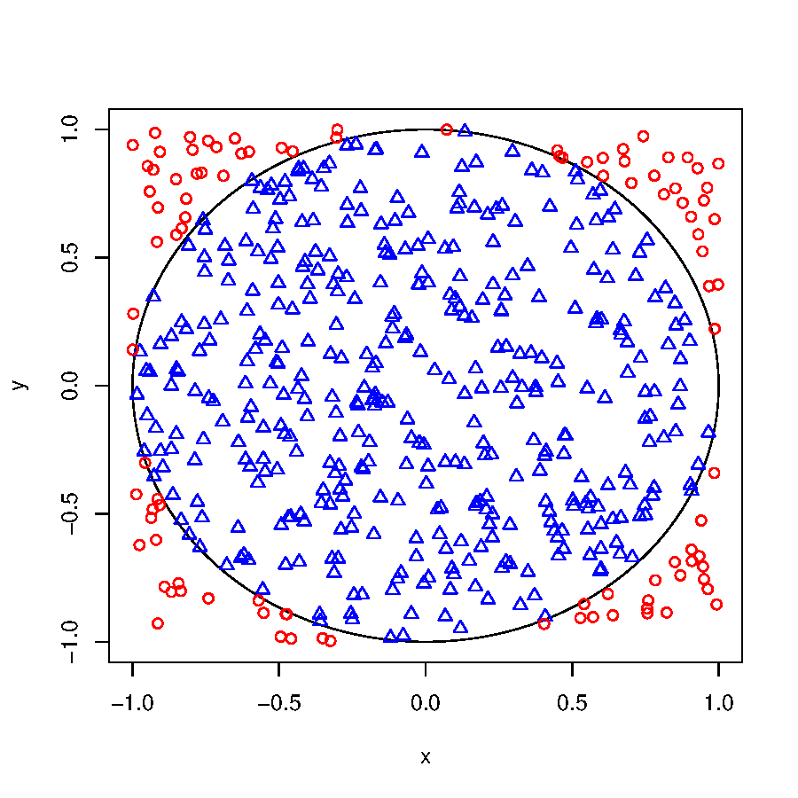
Since the acceptance rate estimates \(\pi/4\), 4 * mean(accept) estimates \(\pi\). This is Monte Carlo integration. Its error decreases like \(1/\sqrt{n}\).
NoteGoing further: the general accept-reject method
The disk inside the square is one case of a general recipe. Sample from an easy density that sits above the hard one, then keep each draw with probability equal to the ratio of the two.
- You want to sample from \(f\), the target density. You can already sample from \(g\), the envelope density.
- Find a constant \(c\) with \(f(x) \le c\, g(x)\) for every \(x\).
- Algorithm:
- repeat
- draw \(Y \sim g\) and \(U \sim \mathrm{Unif}(0,1)\)
- until \(U \le f(Y) / (c\, g(Y))\)
- return \(Y\)
- repeat
- The accepted \(Y\) has density \(f\) exactly, not approximately.
- Each trial is accepted with probability \(1/c\), so the expected number of trials is \(c\). So we want \(c\) as small as possible.
- The disk is this recipe with \(f\) uniform on the disk, \(g\) uniform on the square, and \(c = 4/\pi = 1.27\).
A worked case: draw standard normals using a Cauchy envelope. The Cauchy has heavier tails than the normal, so a single constant does bound the ratio. Here \(c = 1.52\), and about two thirds of the draws survive. The shaded gap between the two curves in the plot below is the part that is rejected. A better envelope makes it smaller.
Squeezing, the discrete case, the ratio-of-uniforms method, and adaptive rejection sampling all build on this same picture. They are covered in STAT 7400.
Source: the treatment follows Luke Tierney, Simulation, STAT:7400 course module, pages 37 to 54. https://homepage.divms.uiowa.edu/~luke/classes/STAT7400/modules/mod_sim.pdf
6 Multivariate Transformations
6.1 Box-Muller method for the standard normal
If \(U_1\) and \(U_2\) are independent and uniform on \([0, 1]\), then
\[ \begin{aligned} X_1 &= \sqrt{-2\log U_1}\cos(2\pi U_2),\\ X_2 &= \sqrt{-2\log U_1}\sin(2\pi U_2), \end{aligned} \]
then \(X_1\) and \(X_2\) are independent standard normals.
- How about the univariate normal distribution \(Z \sim \mathrm{N}(0, 1)\)?
- How about \(\mathrm{N}(\mu, \sigma^2)\)?
- Try the
rnormfunction in R.
6.2 Polar method for the standard normal
- The polar method (by Marsaglia and Bray) is an alternative algorithm to generate the standard normal, and it avoids the slow computation caused by the trigonometric functions.
- Generate \((V_1, V_2)\) which is uniform on the unit disk. Let \(R^2 = V_1^2 + V_2^2\). Then
\[ \begin{aligned} X_1 &= V_1 \sqrt{-(2\log R^2)/R^2},\\ X_2 &= V_2 \sqrt{-(2\log R^2)/R^2}, \end{aligned} \]
are independent standard normals.
Predict — why is the second version better? What does .Machine$double.xmin protect against?
NoteWhat the tiny number is for
It stops \(\log(0)\). If an accepted pair is exactly \((0, 0)\), Rsq is 0, log(0) is -Inf, and the result is NaN.
Adding .Machine$double.xmin, the smallest positive double (about 2.2e-308), moves it off zero by an amount too small to change any other value. In general, check where a formula divides by zero or takes the log of zero, and protect that step.
This almost never happens in one run, so tests rarely catch it. In a long simulation it can happen.
6.3 Checking the normals
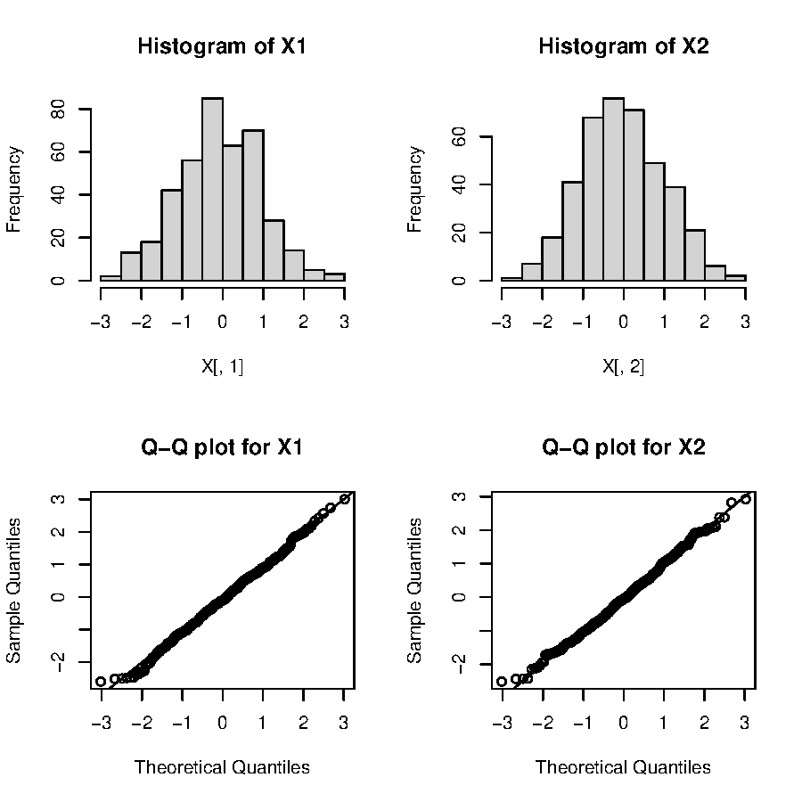
6.4 Q-Q plot for \(\mathrm{N}(\mu, \sigma^2)\)
How to generate \(X \sim \mathrm{N}(\mu, \sigma^2)\)?
- Generate \(Z \sim \mathrm{N}(0, 1)\).
- Compute \(X = \mu + \sigma Z\).
How about the Q-Q plot?
- Plot of \(X_{(i)}\) against
qnorm\(\left(\frac{i-0.5}{n} \right)\) should be an approximately straight line with slope \(\sigma\) and intercept \(\mu\).
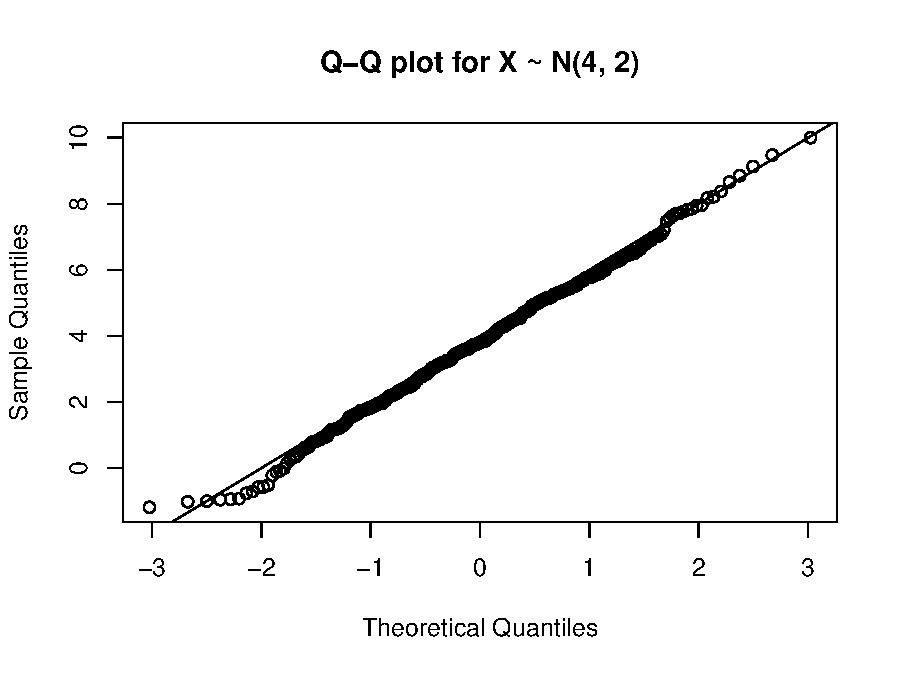
6.5 qqnorm and qqline
- In practice, we want to check the normality.
- In such a case, how can we get the slope and intercept?
- Check out the R functions
qqnormandqqline.
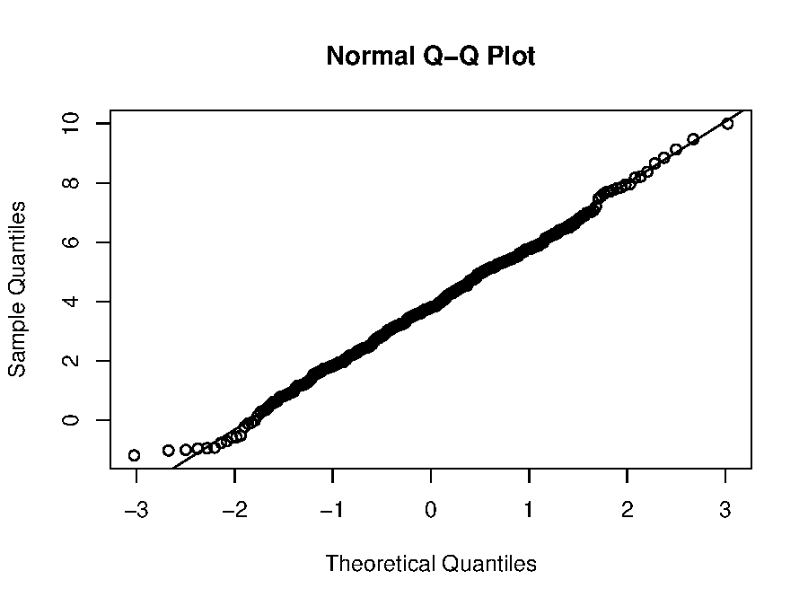
qqline does not use the mean and standard deviation. It draws the line through the first and third sample quartiles, which is more resistant to a few outliers than a fitted least-squares line would be.
6.6 What R actually uses
- Neither Box-Muller nor the polar method is the most efficient. They are useful when a pair of normal variables is generated.
- The default method in R to generate normal distributions is through the inverse CDF method (AS 241 algorithm): Wichura, M. J. (1988) Algorithm AS 241: The percentage points of the normal distribution, Applied Statistics, 37, 477–484.
The two agree to about 7 digits. R uses inversion, but it combines two uniforms for each normal to get more precision, so the numbers are not exactly equal.
6.7 Standard Cauchy, again
- If \(X_1\) and \(X_2\) are independent standard normals, then \(Y = X_1/X_2\) follows a standard Cauchy distribution.
- Let us continue the previous example. Since
\[ X_1 = V_1 \sqrt{-(2\log R^2)/R^2}, \qquad X_2 = V_2 \sqrt{-(2\log R^2)/R^2}, \]
then
\[ Y = \frac{X_1}{X_2} = \frac{V_1}{V_2} \]
follows the standard Cauchy distribution. The messy square root cancels, so the ratio of the two accepted uniforms is already Cauchy.
6.8 \(\chi_v^2\) distribution
Suppose \(Z_1, \ldots, Z_v\) are independent standard normals. Then
\[ Y = \sum_{i=1}^v Z_i^2 \]
has a \(\chi_v^2\) distribution.
- Note this is not an efficient way to generate \(\chi^2_v\).
- A better way is to generate a gamma distribution, since \(\chi^2_v\) is a Gamma\((v/2, 2)\) distribution.
- A gamma distribution can be generated through accept-reject sampling.
6.9 Student’s \(t\) distribution
Suppose
- \(Z\) has a standard normal distribution,
- \(Y\) has a \(\chi_v^2\) distribution,
- \(Z\) and \(Y\) are independent.
Then
\[ X = \frac{Z}{\sqrt{Y/v}} \]
has a \(t\) distribution with \(v\) degrees of freedom.
6.10 \(F\) distribution
Suppose \(a > 0\), \(b > 0\), and
- \(U \sim \chi_a^2\),
- \(V \sim \chi_b^2\),
- \(U\) and \(V\) are independent.
Then
\[ X = \frac{U/a}{V/b} \]
has an \(F\) distribution with \(a\) and \(b\) degrees of freedom.
7 Multivariate Normal Distributions
7.1 Goal
Generate \(X \sim \mathrm{N}_p(\boldsymbol{\mu}, \boldsymbol{\Sigma})\), where \(\mathrm{N}_{p}(\boldsymbol{\mu},\boldsymbol{\Sigma})\) denotes the \(p\)-dimensional normal distribution with
- mean vector \(\boldsymbol{\mu} = (\mu_1, \ldots, \mu_p)'\),
- variance-covariance matrix (symmetric and non-negative definite)
\[ \boldsymbol{\Sigma} = \left(\begin{array}{cccc} \sigma_{1}^2 & \sigma_{12} & \ldots & \sigma_{1p}\\ \sigma_{12} & \sigma_{2}^2 & \ldots & \sigma_{2p}\\ \vdots & \vdots & \vdots & \vdots \\ \sigma_{1p} & \sigma_{2p} & \ldots & \sigma_{p}^2\\ \end{array} \right). \]
Here we use \(X\), \(Y\), \(Z\) to denote vectors, and \(\mathbf{X}\), \(\mathbf{Y}\), \(\mathbf{Z}\) to denote matrices.
7.2 Review of random matrices
- Let \(\mathbf{Y}\) denote an \(n\times p\) random matrix. Let \(\mathbf{B}\in \mathbb{R}^{m\times n}\), \(\mathbf{C}\in \mathbb{R}^{p\times q}\), and \(\mathbf{D}\in \mathbb{R}^{m\times q}\) be non-random. Then
\[ \mathrm{E}(\mathbf{B}\mathbf{Y}\mathbf{C} + \mathbf{D}) = \mathbf{B}\,\mathrm{E}(\mathbf{Y})\,\mathbf{C} + \mathbf{D}. \]
- Let \(X\) denote a \(p\)-dimensional random vector and define \(Y = \mathbf{B}X + b\), where \(\mathbf{B} \in \mathbb{R}^{q \times p}\) and \(b \in \mathbb{R}^q\) are non-random. Then
\[ \mathrm{E}(Y) = \mathbf{B}\,\mathrm{E}(X) + b, \qquad \mathrm{Var}(Y) = \mathbf{B}\,\mathrm{Var}(X)\,\mathbf{B}'. \]
- Suppose that \(W\sim \mathrm{N}_{p}(\mu,\boldsymbol{\Sigma})\), \(\mathbf{B}\in\mathbb{R}^{k\times p}\) is non-random, and \(b\in\mathbb{R}^{k}\) is non-random. Then
\[ Y=\mathbf{B}W+b\sim \mathrm{N}_{k}(\mathbf{B}\mu+b,\ \mathbf{B}\boldsymbol{\Sigma}\mathbf{B}'). \]
7.3 Eigen-decomposition
- For a \(p \times p\) symmetric matrix \(\mathbf{A}\) we can write \(\mathbf{A}=\mathbf{V}\boldsymbol{\Lambda}\mathbf{V}'\), where \(\mathbf{V}\in \mathbb{R}^{p\times p}\) is an orthogonal matrix (hence \(\mathbf{V}'\mathbf{V}=\mathbf{I}_{p}\)) and \(\boldsymbol{\Lambda}\in \mathbb{R}^{p\times p}\) is diagonal.
- The columns of \(\mathbf{V}\) are called the eigenvectors of \(\mathbf{A}\) and the diagonal elements of \(\boldsymbol{\Lambda}\) are called the eigenvalues of \(\mathbf{A}\), ordered \(\lambda_{1}\geq\lambda_{2}\geq\cdots\geq\lambda_{p}\).
- The matrix \(\mathbf{A}\) is positive semi-definite if and only if \(\lambda_p \ge 0\). It is positive definite if and only if \(\lambda_p > 0\).
The eigen-decomposition allows for much easier computation of power series of matrices. Suppose \(\mathbf{A}=\mathbf{V}\boldsymbol{\Lambda}\mathbf{V}'\) with \(\lambda_1, \ldots, \lambda_p \geq 0\). We have
\[ \mathbf{A}^{x}=\mathbf{V}\mathrm{diag}(\lambda_1^x, \ldots, \lambda_p^x)\mathbf{V}'=\mathbf{V}\boldsymbol{\Lambda}^{x}\mathbf{V}', \]
where \(x\) is any real number. For example,
\[ \mathbf{A}^{1/2}=\mathbf{V}\mathrm{diag}(\lambda_1^{1/2}, \ldots, \lambda_p^{1/2})\mathbf{V}'=\mathbf{V}\boldsymbol{\Lambda}^{1/2}\mathbf{V}', \]
because
\[ \begin{aligned} \mathbf{A}^{1/2}\mathbf{A}^{1/2} & = \mathbf{V}\boldsymbol{\Lambda}^{1/2}\mathbf{V}'\mathbf{V}\boldsymbol{\Lambda}^{1/2}\mathbf{V}'\\ & = \mathbf{V}\boldsymbol{\Lambda}^{1/2}\boldsymbol{\Lambda}^{1/2}\mathbf{V}'\\ & = \mathbf{V}\boldsymbol{\Lambda}\mathbf{V}' = \mathbf{A}. \end{aligned} \]
If matrix \(\mathbf{A}\) can be eigen-decomposed and none of its eigenvalues are zero, then \(\mathbf{A}\) is non-singular and its inverse is \(\mathbf{A}^{-1}=\mathbf{V}\boldsymbol{\Lambda}^{-1}\mathbf{V}'\).
7.4 Generate one copy from \(\mathrm{N}_p(\boldsymbol{\mu}, \boldsymbol{\Sigma})\)
Goal: generate \(X \sim \mathrm{N}_p(\boldsymbol{\mu}, \boldsymbol{\Sigma})\).
- Algorithm:
- Generate a \(p\)-dimensional vector \(Z = (z_1, \ldots, z_p)\) where each \(z_j \sim \mathrm{N}(0, 1)\) independently (say, using the polar method).
- Let \(X = \mu + \boldsymbol{\Sigma}^{1/2}Z\).
- This is because \(\mathrm{E}(X)=\mu+\boldsymbol{\Sigma}^{1/2}\mathrm{E}(Z)=\mu\) and \(\mathrm{Var}(X)=\boldsymbol{\Sigma}^{1/2}\mathrm{Var}(Z)\boldsymbol{\Sigma}^{1/2}=\boldsymbol{\Sigma}^{1/2}\mathbf{I}_{p}\boldsymbol{\Sigma}^{1/2}=\boldsymbol{\Sigma}\).
7.5 Generate multiple copies from \(\mathrm{N}_p(\boldsymbol{\mu}, \boldsymbol{\Sigma})\)
Goal: generate \(X_1, \ldots, X_n \stackrel{\text{i.i.d.}}{\sim} \mathrm{N}_p(\boldsymbol{\mu}, \boldsymbol{\Sigma})\).
- Algorithm:
- Generate an \(n\times p\) random matrix \(\mathbf{Z}\) whose entries are i.i.d. \(\mathrm{N}(0,1)\).
- Let \(\mathbf{X}=1_{n}\boldsymbol{\mu}'+\mathbf{Z}\boldsymbol{\Sigma}^{1/2}\). Then \(\mathbf{X}\) is an \(n \times p\) matrix whose rows are i.i.d. \(\mathrm{N}_{p}(\boldsymbol{\mu},\boldsymbol{\Sigma})\).
- You may either generate those random variables one by one, or use a more efficient “vectorized” way. Think about how \(\mathbf{Z}\boldsymbol{\Sigma}^{1/2}\) works.
Note the order: \(\mathbf{Z}\boldsymbol{\Sigma}^{1/2}\) with the matrix on the right, because each row of \(\mathbf{Z}\) is one observation. Writing \(\boldsymbol{\Sigma}^{1/2}\mathbf{Z}\) gives a dimension error, because \(\mathbf{Z}\) is \(n \times p\).
7.6 R library mvtnorm
7.7 Python function multivariate_normal
The two Python results disagree, because \(\boldsymbol{\Sigma}^{1/2}\) is not unique. The symmetric root and the Cholesky factor both give the right distribution, but different numbers.